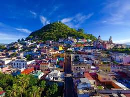
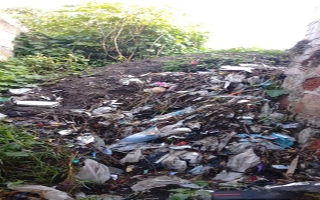
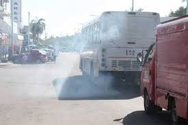
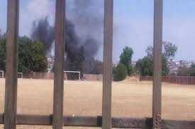
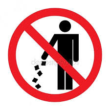
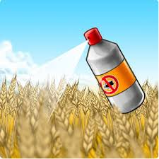
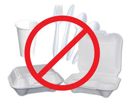
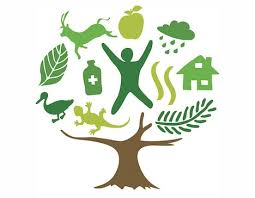
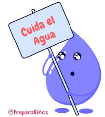

Contaminación ambiental de mi comunidad.
Atlixco Puebla

La contaminación es la presencia o acumulación de sustancias en el medio ambiente que afectan negativamente el entorno y las condiciones de vida, así como la salud o la higiene de los seres vivos. Con este significado también se suele utilizar el concepto de contaminación ambiental.
Como contaminación también se denomina una alteración en una sustancia o un producto, como un alimento o una muestra. Por ejemplo: “La contaminación de las muestras obligó a los científicos a recoger nuevas muestras.
Contaminación también significa contagio o transmisión de una enfermedad. Por ejemplo: “Te he contaminado mi virus”.
Esta palabra procede del latín contaminatĭo, contaminatiōnis, que se deriva del verbo contamināre, que significa ‘corromper, ensuciar o alterar por el contacto.
La contaminación puede clasificarse según el tipo de fuente de donde proviene, o por la forma de contaminante que emite o medio que contamina. Existen muchos agentes contaminantes entre ellos las sustancias químicas (como plaguicidas, cianuro, herbicidas y otros.), los residuos urbanos, el petróleo, o las radiaciones ionizantes. Todos estos pueden producir enfermedades, daños en los ecosistemas o el medioambiente. Además existen muchos contaminantes gaseosos que juegan un papel importante en diferentes fenómenos atmosféricos, como la generación de lluvia ácida, el debilitamiento de la capa de ozono, y el cambio climático.
Existen diferentes tipos de contaminación dependiendo del ámbito en que se produzcan las alteraciones de las condiciones normales para la vida.
La contaminación del agua es una modificación o alteración del agua que tiene consecuencias negativas en el medio ambiente y en los seres vivos. También se utiliza el concepto de contaminación hídrica. El ser humano es el principal responsable de la contaminación del agua, especialmente a través del vertido de aguas residuales, que no han sido tratadas y que proceden de actividades como la industria, la ganadería y la agricultura, en dicho medio. Se pueden distinguir tres tipos de agentes contaminantes del agua: físicos, químicos y biológicos.
La contaminación del aire es la existencia de partículas sólidas, líquidas y gases perjudiciales para los seres vivos y el entorno. En ocasiones, se utilizan términos semejantes como contaminación atmosférica. La contaminación del aire puede provocar graves problemas de salud a través de la inhalación de sustancias tóxicas. Puede proceder de fuentes naturales como, por ejemplo, la erupción de un volcán, o de la acción del ser humano.
La contaminación del suelo es la presencia de sustancias que afectan negativamente las características y propiedades del suelo y que provocan desequilibrios físicos, químicos y biológicos que afectan de forma negativa a los seres vivos y el entorno. El suelo se puede contaminar por influencia del aire o del agua, que introduce agentes contaminantes, pero también al acumular o arrojar sustancias nocivas como los fertilizantes.
La contaminación visual es la modificación de un entorno producida por la existencia de uno o varios elementos, cuya presencia impide o perjudica la visibilidad o afecta negativamente la estética de un lugar. La contaminación visual puede tener consecuencias perjudiciales para la salud, como el estrés.
Como contaminación acústica o sonora se conoce aquella que se produce como consecuencia de las alteraciones que causa el exceso de sonido en las condiciones normales del medio ambiente. La contaminación sonora puede ser provocada por una multitud de actividades humanas, como las asociadas a la industria, la construcción, el comercio, el entretenimiento, el tráfico o los aviones.
El reciclaje es un proceso cuyo objetivo es convertir desechos en nuevos productos o en materia para su posterior utilización.
Las tres erres consisten en una práctica para alcanzar una sociedad más sostenible.
Reducir: acciones para reducir la producción de objetos susceptibles de convertirse en residuos, con medidas de compra racional, uso adecuado de los productos, compra de productos sostenibles.
Reciclar: el conjunto de operaciones de recogida y tratamiento de residuos que permiten reintroducirlos en un ciclo de vida. Se utiliza la separación deresiduos en origen para facilitar los canales adecuados.
Reutilizar: acciones que permiten el volver a usar un determinado producto para darle una segunda vida, con el mismo uso u otro diferente. Medidas encaminadas a la reparación de productos y alargar su vida útil.


En cuanto a la contaminación ambiental, el municipio de Atlixco presenta niveles preocupantes, principalmente en lo relacionado al suelo, afirmó el regidor de seguridad pública y gobernanza, Jorge Moya Hernández.
El regidor destacó que el municipio cuenta con redes de drenaje y alcantarillado sólo en los principales poblados, y el resto tiene redes y fosas sépticas. “Esto no implica que se cuente con la infraestructura y el servicio de drenaje y alcantarillado en buenas condiciones en todos los casos, el problema es que los desechos son vertidos a las cañadas para contaminar los principales ríos, contribuyendo al problema ambiental referido, y que de paso constituye un foco potencial de riesgo a la salud.

Moya comentó que las fuentes receptoras de las descargas se dividen principalmente en tres zonas, según la conformación topográfica del sitio, denominadas: barranca El Carmen, arroyo el Cuexcomate y Río Cantarranas.
Lamentó que estos sitios de vertido de las aguas negras en el mayor número de casos están a cielo abierto y sin ningún tipo de tratamiento, dirigiéndose a los ríos de La Leona y Nexapa.
Por todo esto, finalizó, Atlixco “corre un serio peligro de salud ya que el diseño del sistema de albañales está rebasado y debido a taponamientos por el exceso de desechos sólidos tirados al drenaje se ocasiona una saturación al grado de que las aguas negras brotan por alcantarillas y desagüen dentro de la propias viviendas”.







